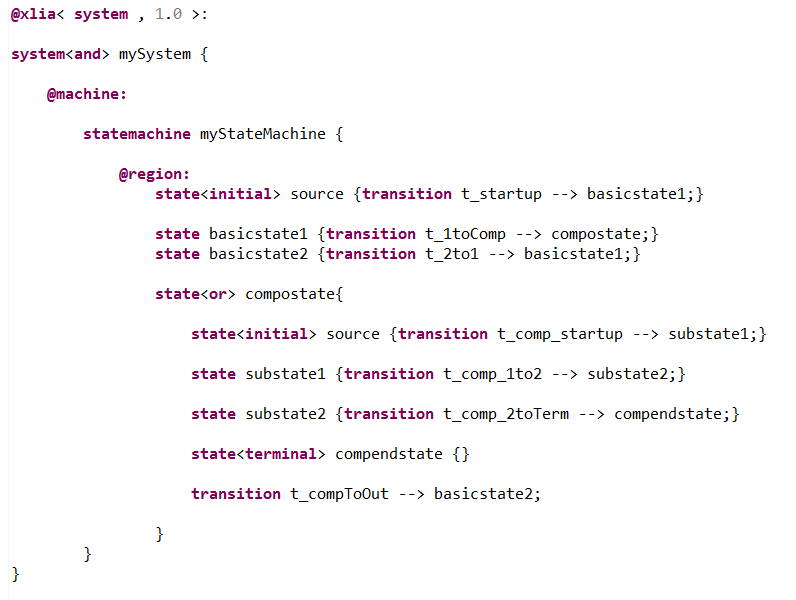
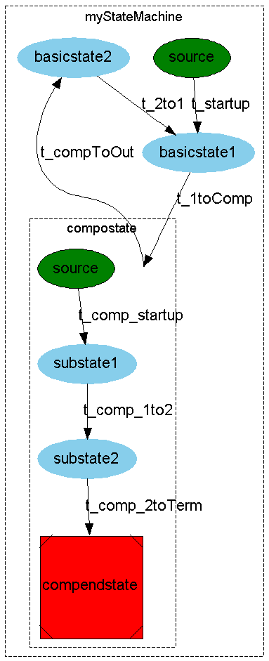

This kind of state is more complex. It relies on defining sub-states which are other machines of type "state".
To declare sub-states within a composite state, you just need to declare states normally in the body of the composite state. There is no need for any sections. However, you'll need to add the flag "or" or "and" to the composite state.
The handling of transitions is very flexible; ou can define transitions :
In the following we'll give some examples.
XLIA code :
Generated graph :
As you've seen, in this example, what's inside the composite state can be well isolated from what's outside. The composite state may act as a blackbox for the rest of the system. It's life cycle is autonomous, with a clear starting point and ending.
A much less constrained way to use composite states, is as a way to regroup states into bundles or families of states.
This kind of composite state have neither initial/start nor terminal/final sub-states.
Implementing such composite states may allow to regroup common behaviors for the sub-states (for instance with the "@run{...}" activity primitive).
See this example.